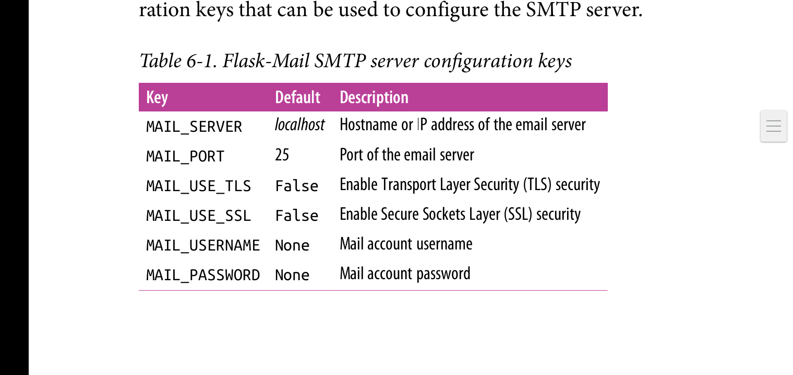

Chapter 6: Email
概览
当特定事件发生时，大多数app会使用email来通知用户。本章你将学会如何在 flask app里发送邮件。
Email Support with Flask-Mail
flask-mail连接Simple Mail Transfer Protocol(SMTP)服务器，将用户将发送的邮件交由该服务器转发。如果没有配置该库，则flask-email将连接localhost,端口映射，并且没有验证机制。以下是用于配置SMTP服务器的配置关键字:

以下是通过flask-email使用qq邮箱发送邮件的配置代码:
# hello.py flask-mail configuration for qq mail
import os
#...
app.config['MAIL_SERVER'] = 'smtp.qq.com'
app.config['MAIL_PORT'] = 465
app.config['MAIL_USE_TLS'] = False #必须关闭
app.config['MAIL_USE_SSL'] = True # 必须打开
app.config['MAIL_USERNAME'] = os.environ.get('MAIL_USERNAME')
app.config['MAIL_PASSWORD'] = os.environ.get('MAIL_PASSWORD')
不将敏感信息写在代码文件里，而是通过环境变量来将信息导入进代码。
要在flask-mail里使用qq邮箱，必须开启qq邮箱账户里的前两项服务。这里的MAIL_PASSWORD并非是qq邮箱的密码，而是开启的第二个服务的授权码。
flask-mail初始化:
from flask_mail import Mail mail = Mail(app)之后必须定义要使用到的MAIL_USERNAME和MAIL_PASSWORD两个环境变量
Sending Email From Python Shell
(venv) $ flask shell
>>> from flask_mail import Message
>>> from app import mail
>>> msg = Message('test email', sender='1558911620@qq.com', recipients=['1558911620@qq.com']) # 这里recipients 代表邮件接受人的邮箱地址。第一个参数表示邮件标题
>>> msg.body = 'This is the plain text body' #表示邮件内容
>>> msg.html = 'This is te <b>HTML</b> body'
>>> with app.app_context():
mail.send(msg)
Integrating Emails with the Application
以下是代码:
# hello.py email support from flask_mail import Message app.config['FLASKY_MAIL_SUBJECT_PREFIX'] = '[Flasky]' app.config['FLASKY_MAIL_SENDER'] = '1558911620@qq.com' def send_email(to, subject, template, **kwargs): msg = Message(app.config['FLASKY_MAIL_SUBJECT_PREFIX'] + subject sender=app.config['FLASKY_MAIL_SENDER'], recipients=[to]) msg.body = render_template(template + '.txt', **kwargs) msg.html = render_template(template + '.html', **kwargs) mail.send(msg)
以下是index函数处理新用户访问网站时，给管理员发送邮件的代码:
#hello.py email example
#...
app.config['FLASKY_ADMIN'] = os.environ.get('FLASK_ADMIN')
#....
@app.route('/', methods=['GET', 'POST'])
def index():
form = NameForm()
if form.validate_on_submit():
user = User.query.filter_by(username=form.name.data).first()
if user is None:
user = User(username=form.name.data)
db.session.add(user)
db.session.commit()
session['known'] = False;
if app.config['FLASKY_ADMIN']:
send_email(app.config['FLASKY_ADMIN', 'New User', 'mail/new_user', user=user)
else:
session['known'] = True
session['name'] = form.name.data
form.name.data = ''
return redirect(url_for('index'))
return render_template('index.html', form=form, name=session.get('name'), known=session.get('known', False))
Sending Asynchrnous Email
如果你发送了一些测试邮件，你会发现mail.send()函数阻塞了app的主线程当发送的时候，在这个时候浏览器看起来像是失去了响应。为了避免在请求处理的时候不必要的延迟，邮件发送函数可以移到一个后台线程。以下是代码:
#hello.py asynchronous email support from threading import Thread def send_async_email(app, msg): msg = Message(app.config['FLASK_MAIL_SUBJECT_PREFIX'] + subject, sender=app.config['FLASKY_MAIL_SENDER'], recipients=[to]) msg.body = render_template(template + '.txt', **kwargs) msg.html = render_template(template + '.html', **kwargs) thr = Thread(target=send_async_email, args=[app, msg]) thr.start() return thr上述代码实现高亮了一个有趣的问题。很多flask扩展运行在这样一个假设下: 有一个活跃的app或者并且请求环境。就像之前在shell里一样，flask-email的send()函数使用current_app。因此它要求激活application context.但是因为context是与主线程相关，当在另一个线程中使用mail.send()函数时需要使用app.app_context()函数手动创建application context.
注意对于发送大量邮件的app,一个专用于邮件发送的job比为每一个邮件发送操作单独开启一个新线程更加合适。比如send_async_email函数的执行体可以发送到Celery任务队列中。